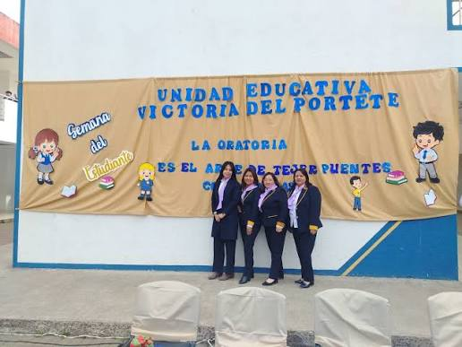
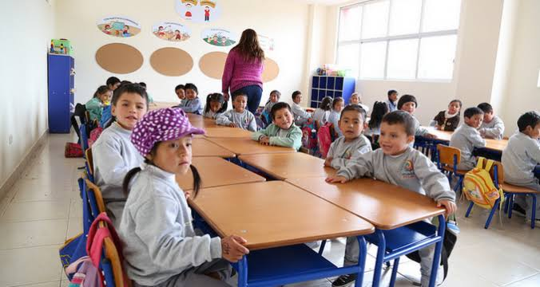

Inicio › Noticias Institucionales
📋 Noticias Institucionales
Actividades, proyectos educativos, logros y eventos de nuestra institución
Noticias Institucionales
📅 20 de octubre de 2015
✍️ Redacción GV
Inauguración de la UEM Victoria del Portete
El 20 de octubre de 2015, la parroquia Victoria del Portete celebró la inauguración de su nueva Unidad Educativa del Milenio, la número 56 entregada por el Gobierno Nacional. El acto contó con la presencia del entonces presidente Rafael Correa Delgado.
La institución agrupa a 13 escuelas del sector, con una inversión de más de 6,8 millones de dólares. Cuenta con 30 aulas, laboratorios de física, química, ciencias, tecnología e idiomas, biblioteca, comedor, bar, patio cívico y 2 canchas de uso múltiple.
Tiene capacidad para 1.140 alumnos por jornada y es atendida por 40 docentes. Las instalaciones son de uso comunitario, abiertas también para padres de familia y vecinos del sector.


📸
'" />

🎯'" />
Noticias Institucionales
📅 Año lectivo 2025-2026
✍️ Redacción GV
Nuestra institución hoy: datos del año lectivo 2025-2026
La Unidad Educativa Victoria del Portete es una institución fiscal ubicada en la parroquia Victoria del Portete (Irquis), cantón Cuenca, provincia de Azuay. Forma parte de la Zona 6 y ofrece educación desde el nivel Inicial hasta Bachillerato.
Para el año lectivo 2025-2026, la institución cuenta con 976 estudiantes (490 hombres y 486 mujeres) distribuidos en: 44 en Inicial, 744 en Educación General Básica y 188 en Bachillerato. El personal docente suma 47 educadores y 5 administrativos.
La institución es completamente gratuita, financiada por el Estado ecuatoriano, con modalidad presencial en jornadas matutina y vespertina.